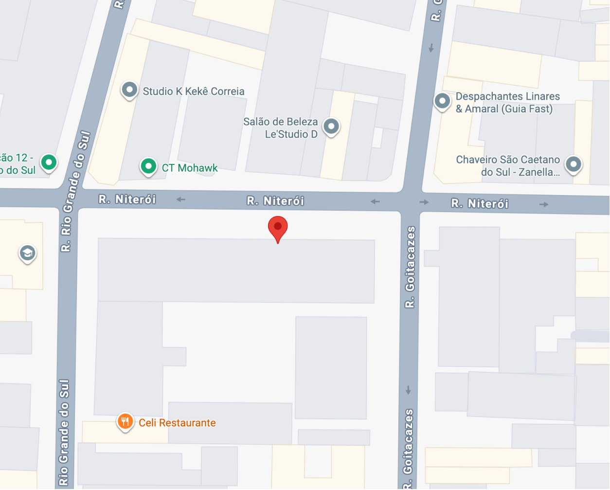

DESTAQUES


SOBRE NÓS

A história da Dona Teresa começou na cozinha, com bolos e doces que despertam memórias afetivas.
O sucesso online levou seus netos a investirem na marca, que hoje busca uma identidade visual
encantadora, uma escola de confeitaria e presença digital marcante. Tudo isso no coração de
São Caetano do Sul.
CONHEÇA NOSSA MARCA
1 / 3

2 / 3

3 / 3


ESTAMOS EM: